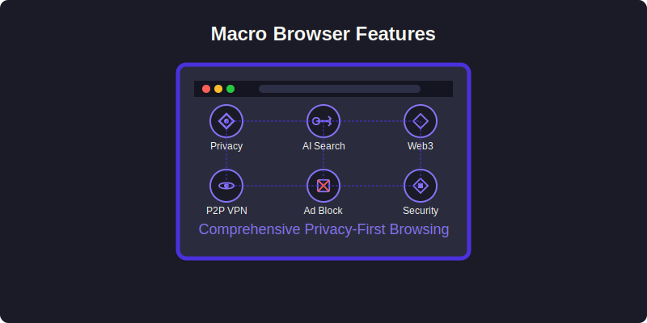

Macro Browser Features
Macro Browser combines cutting-edge privacy technology with Web3 integration to deliver a unique browsing experience. Here's an overview of our key features:

Privacy First
Macro Browser is built with privacy as its foundation:
- Private Browsing by Default: All sessions operate in private mode with no persistent history
- De-Googled Chromium: Based on Chromium but with Google services and tracking components removed
- Ad & Tracker Blocking: Built-in protection against intrusive ads and trackers
- Secure Connections: Automatic HTTPS upgrades and insecure site warnings
- P2P VPN: Decentralized, peer-to-peer VPN for enhanced privacy
Intelligent Interface
- AI-Powered Search: Intelligent search capabilities that respect your privacy
- Clean, Minimal Design: Distraction-free browsing experience with dark mode by default
- Custom New Tab Page: Quick access to relevant Web3 sites and dApps
Web3 Integration
- Crypto Wallet Integration: Connect your existing wallets or use the built-in solution
- dApp Support: Seamless interaction with decentralized applications
- Transaction Security: Clear approval process for all Web3 transactions
Performance & Security
- Lightweight Design: Built on Electron with optimized performance
- Enhanced Security: Additional security layers beyond standard browsers
- Regular Updates: Continuous improvements and security patches
Feature Comparison
| Feature | Macro Browser | Standard Chrome | Firefox | Brave |
|---|---|---|---|---|
| Private by Default | ✅ | ❌ | ❌ | ❌ |
| Ad Blocking | ✅ | ❌ | ❌ | ✅ |
| P2P VPN | ✅ | ❌ | ❌ | ❌ |
| Native Web3 Support | ✅ | ❌ | ❌ | ✅ |
| De-Googled | ✅ | ❌ | ✅ | Partial |
| AI-Powered Search | ✅ | ❌ | ❌ | ❌ |
Explore each feature in detail through the links in the sidebar.